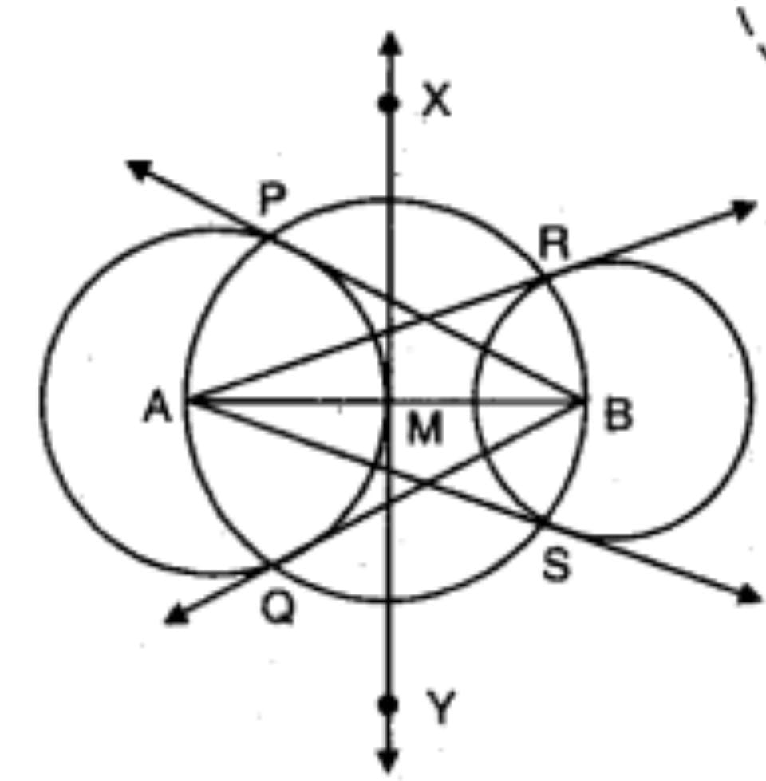

(Q4) Draw a line segment AB of length 8 cm. Taking A as centre, draw a circle of radius 4 cm and taking B as centre, draw another circle of radius 3 cm. Construct tangents to each circle from the centre of the other circle.

Steps of construction:
Draw a line segment AB of length cm
With A and B as centers and cm, cm as radius draw two circles
Draw the perpendicular bisectors XY of AB. Let XY and AB meet at
Taking M as center and MA or MB as radius draw a circle which cuts the circle with center A at P and Q and circle with center A at R, S.